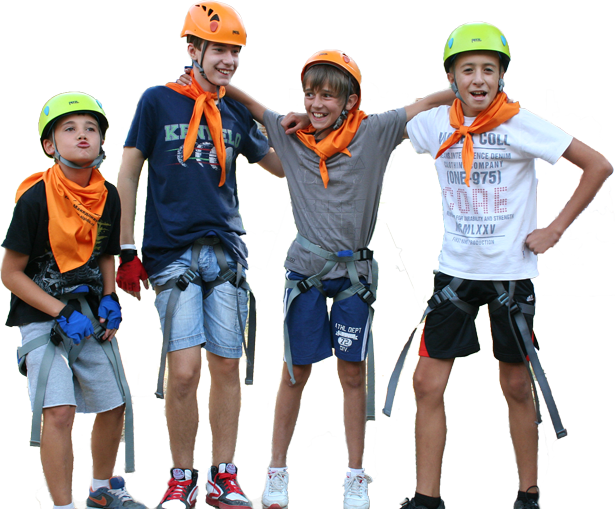
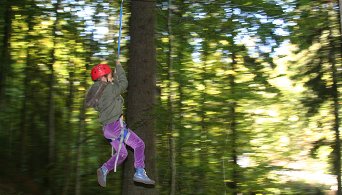
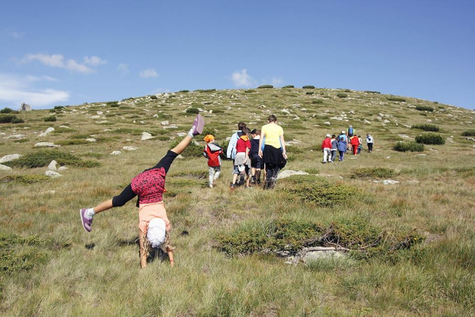
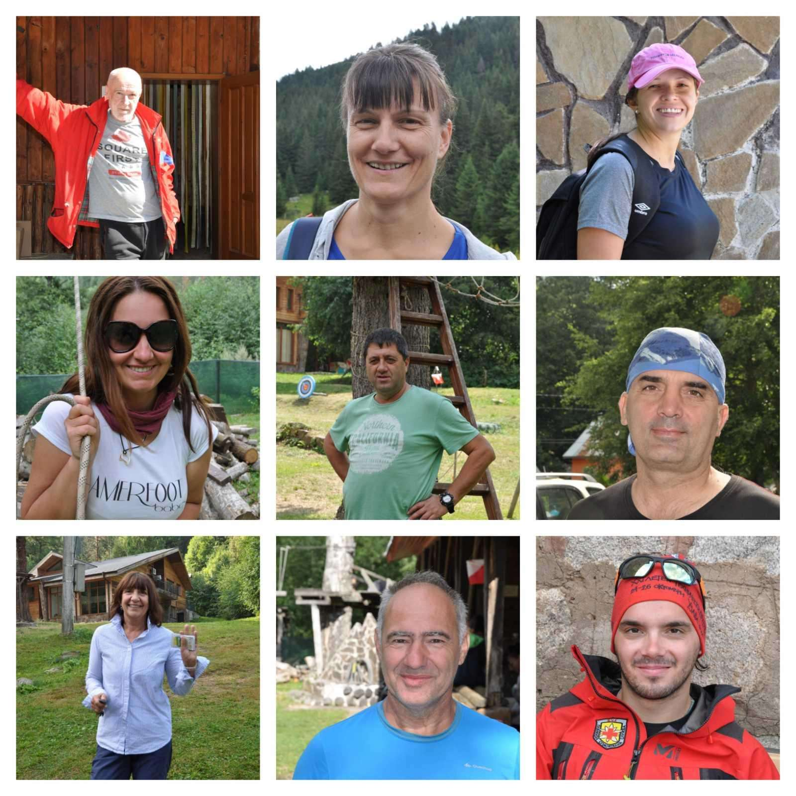
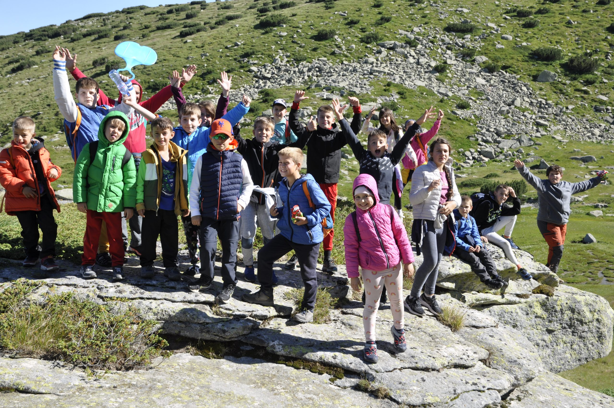

За 14-та поредна година обявяваме готовността си за вашите записвания!
Ако си дете между 6 и 14 години – заповядай при нас!
Ръководството на Туристическо Дружество „Айгидик“ и екипът на Приключенско училище по
планинарство ви обещава 10 незабравими дни в планина Рила планина, на 27км от Благоевград, в
близост до биосферния резерват „Парангалица“. Ще се забавляваме заедно вие и ние докато научавате
нови, интересни и полезни неща за планината.
С какво ще се занимавате ли?
- Ще се запознаете с правилата при провеждане на планински поход
- Ще овладеете техники за придвижване в трудни терени
- Ще се изкачите до Голям Мечи връх на 2618м.
- Ще научите да се ориентирате с: компас, карта, зимни и летни маркировки и др.
- Ще научите да използвате алпийски инвентар, сертифициран и предназначен за деца
- Ще се научите да връзвате възли, използващи се в алпинизма
- Ще научите да строите биваци и заслони
- Ще се научите да палите огън по няколко различни начина
- Ще се запознаете с опасностите в планината и как да ги избягвате
- Ще научите най-оптималните начини да помогнете на попаднал в беда
- Ще разберете тънкостите на скалното катерене, извършващо се по френска методика, съобразена с БДС
- Ще разберете как се работи с високотехнологични GPS устройства
- Ще научите важни неща за правилното хранене и здравословния начин на живот
- Ще приемете правилата за дисциплина, ще свикнете да носите отговорност и ще добиете увереност и самостоятелност
- Ще имате уроци по художествена фотография и изобразително изкуство
- Ще се докоснете до най-високото дърво на Балканския полуостров
- Ще се научите да разпознавате различни видове растения, гъби и животински следи
- Ще се забавляваме всяка вечер с дискотека, под звездното небе.
- И много други
Ще бъдете разделени на отбори на произволен принцип, ще бъдете обучавани групово, ще си изберете капитан
и име на отбора,ще си направите собствено знаме и на последния ден ще се изправите един срещу друг, в битка на
знания и воля, но само най-мотивирания отбор ще победи.


Необходимо облекло и принадлежности
- Обувки 2 чифта( маратонки или туристически обувки за походи) сандали, чехли за баня.
- Панталони – дълъг и къс крачол, бански
- Фланелки дълъг ръкав, тениски, бельо, чорапи
- Полар/ пуловер, може и суичър
- Леко яке – водоустойчиво
- Топло яке
- Лятна шапка с козирка, зимна шапка, ръкавици
- Тоалетни принадлежности, кърпа за баня, плажна кърпа
- Предпазно средство против слънчево изгаряне за деца
- Туристически съд за вода (може и бутилка минерална вода) – 0,5 л.
- Средство за предпазване от насекоми
- Фенерче
- Фотоапарат – по желание

ТД Айгидик с радост ви представят екипа на
Приключенско Училище по планинарство
Курсът по планинарство е поверен на дипломирани планински водачи и
инструктори, планински спасители и алпинисти:
- Сергей Георгиев- хижар, ветеран от Планинско
Спасителна Служба
- Ангелина Стоянова – педагог
- Ива Пачавурова-детски психолог
- Надя Николова – Планински водач, геолог и
полярен изследовател
- Александър Христов – планински водач и
Заместник-председател на Туристическо
дружество „Айгидик“
- Георги Ботев -Инструктор по планинско
спасяване
- Педиатър на лагера – д-р Слава Нинова
- Евгени Шикерлийски – инструктор по
ориентиране и детски кинезитерапевт
- Георги Г. Ботев -планински спасител, педагог

Дати на провеждане за сезон 2024:
I смяна: 22 юли 2024г. – 31 юли 2024г.
II смяна: 31 юли 2024г. – 9 август 2024г.
Срокът за заплащане на таксата за лагера за съответната смяна е най-късно 30 дни преди началната дата.
За записвания и въпроси:
- e-mail: lagerbodrost@hotmail.com
- телефон:+359887890988
- бутона „Запиши се!“
След записване ще получите потвърждение на посочения имейл до 48 часа, за да сте сигурни за Вашето място.
Необходими данни за записване:
- три имена на детето
- ЕГН на детето
- от кой град е
- за първи път ли участва в Училище по планинарство
- име и фамилия на родител/ настойник на детето /
- телефон
- e-mаil адрес
В цената от 840 лв. са включени:
- 10 дни,9 пълен пансион (4 хранения на ден – закуска, обяд, следобедна закуска и вечеря),осигурени места за
нощувки в стаи с 3, 4 и 5 легла със самостоятелен санитарен възел (баня и тоалетна) : минимум 1 нощувка в хижа
Македония на 2166 м. надм. вис.; 1 нощувка на палатка в бивачен лагер /при подходящи условия/
- Педиатър на разположение.
- Планинска застраховка
- Тренировъчна и бивачна екипировка.
- Зала за интерактивно обучение.
- Изкуствена стена за скално катерене.
- Ползване на открит учебен полигон.
- Консумативи и помагала за обучението.
- В цената са включени учебни часове по приложни изкуства и художествена фотография учебни часове по
планинарство (теория и практика).
- Поход до хижа Македония и мегалитната тракийска обсерватория Марков камък.
- Транспорт от Благоевград до хижите Бодрост и Еколенд.
- Денонощен дежурен пост от Планинска спасителна служба или квалифициран планински водач.
- Охрана.

Отстъпки:
- За учениците от учебните заведения намиращи се на територията на
Благоевград,цената е 740лв.
- За второ и трето дете от едно семейство, участващи в лагера през настоящият
сезон (независимо от смяната) се заплаща по 640лв.
- Участвали в Приключенското училище по планинарство през изминалите 7
години,заплащат цена от 700лв.
Снимки: